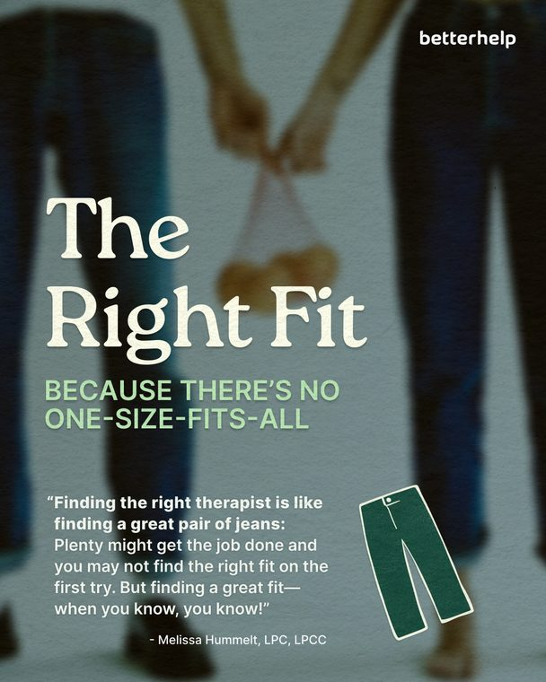
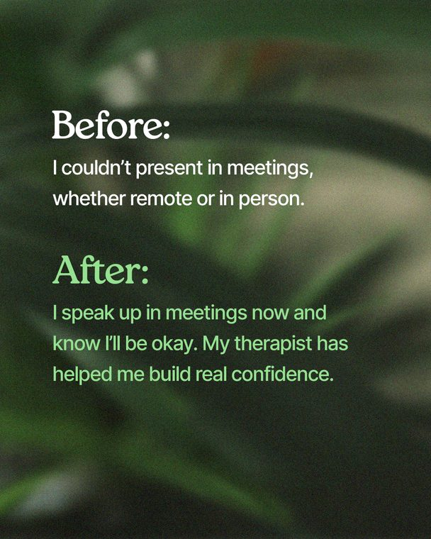
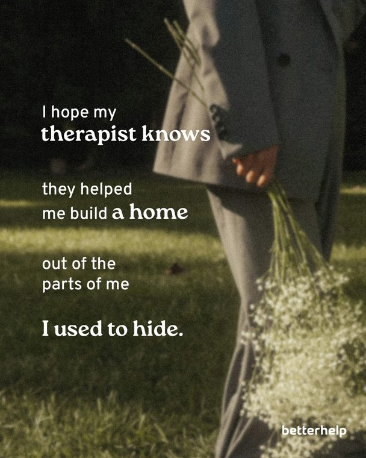
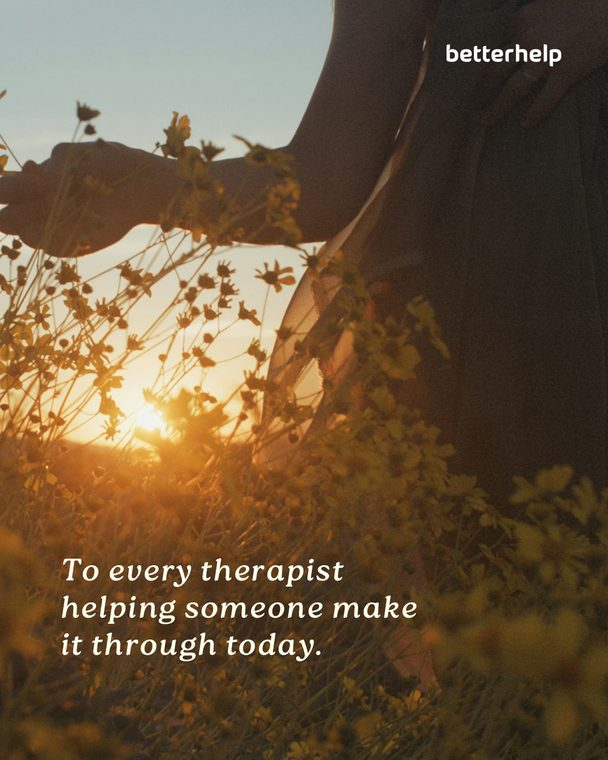
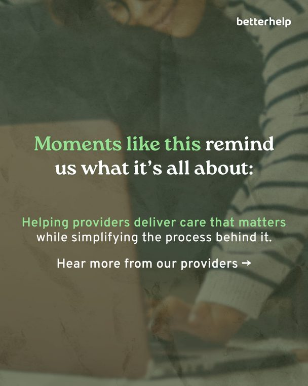
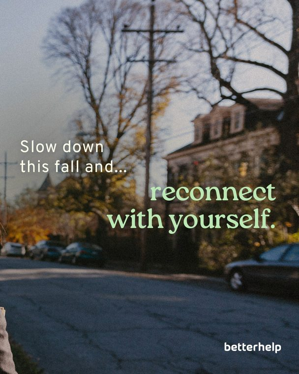

01 / 11 : sep to nov 2025
september tentpole
11 pieces, 70 images. click any piece to open it.
- client
- BetterHelp
- my role
- Social media manager
- deliverables
- Organic social content
- year
- 2025
the brief
Organic social for September 2025: 31 Days of Therapists, reviews, therapist guides and trend formats.
my approach
Draft: add your idea, voice and format choices here.
result
Draft: add numbers you are cleared to share, with the timeframe.
september tentpole
11 pieces open piece9 slidesseptember tentpole
open piece9 slidesseptember tentpoleig stories: sept tentpole01
9 slides
 open piecesingle postseptember tentpole
open piecesingle postseptember tentpolemore from september tentpole02
single post
 open piece8 slidesseptember tentpole
open piece8 slidesseptember tentpoletaking the first step linkedin03
8 slides
 open piece14 slidesseptember tentpole
open piece14 slidesseptember tentpole31 days of therapists04
14 slides


open piece8 slidesseptember tentpolethe right fit: client reviews05
8 slides
 open piece6 slidesseptember tentpole
open piece6 slidesseptember tentpoletloasg trend06
6 slides


open piece5 slidesseptember tentpolebefore vs. after: linkedin07
5 slides


open piece4 slidesseptember tentpolei hope my therapist knows08
4 slides


open piece6 slidesseptember tentpoleto the therapists who...09
6 slides


open piece6 slidesseptember tentpoletherapist testimonials: health plans10
6 slides


open piece3 slidesseptember tentpoletherapist's guide: reconnect with yourself11
3 slides